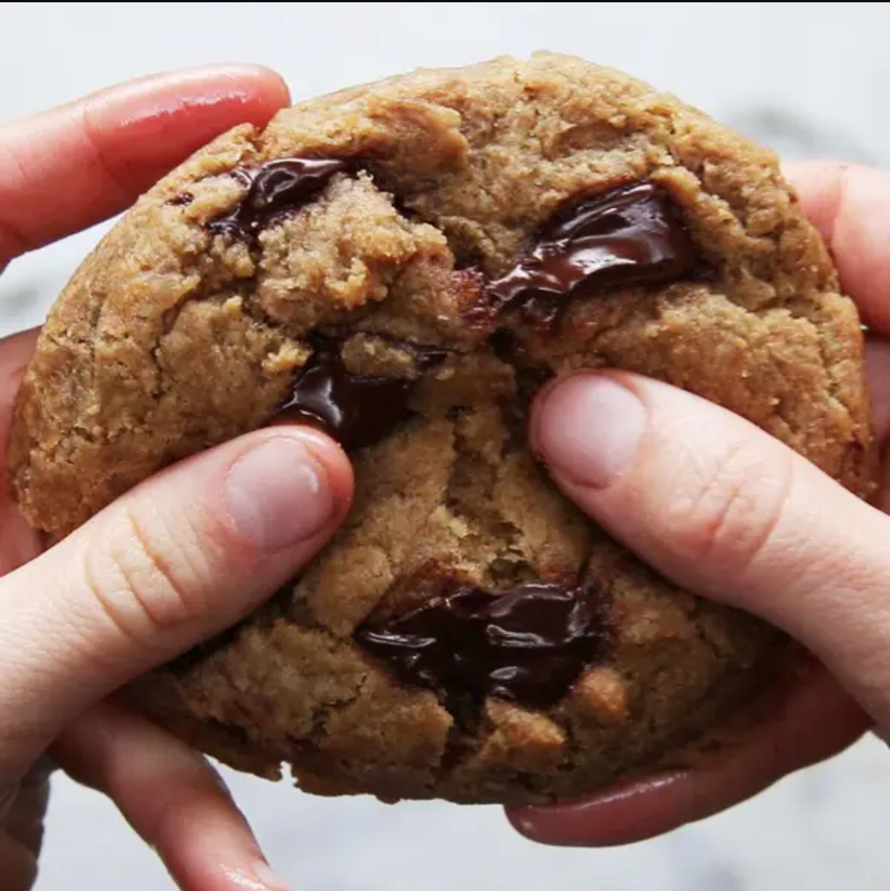

Chocolate Chip Cookies

Some tasty chocolate chip cookies. And yes, they're completely vegan!
Are you sitting at home on a rainy sunday afternoon and have a sudden craving for sweets? Were you invited to a party and want to bring something home-made that doesn't require you to spend all morning in the kitchen?
Well, this is the recipe for you! Not only are these cookies fast and easy to make, they are also vegan. And of course they taste like heaven.
Ingredients
For 10 servings
- 100g sugar
- 165g brown sugar
- 1 teaspoon of slat
- 120g coconut oil (melted)
- 60ml plant-based milk
- 1 teaspoon of vanilla extract
- 185g flour
- ½ teaspoon of baking soda
- 230g chocolate (chunks) - mix dark and light chocolate if you want
Preparation
- In a large bowl, whisk together the sugar, brown sugar, salt, and coconut oil until combined.
- Whisk in non-dairy milk and vanilla, until all sugar has dissolved and the batter is smooth.
- Sift in the flour and baking soda, then fold the mixture with a spatula, being careful not to overmix.
- Fold in the chocolate chunks evenly.
- Chill the dough for at least 30 minutes.
- Preheat oven to 350°F (180°C).
- Scoop the dough with an ice cream scoop onto a parchment paper-lined baking sheet. Be sure to leave at least 2 inches of space between cookies and the edges of the pan so cookies can spread evenly.
- Bake for 12-15 minutes, or until cookies just begin to brown.
- Let it cool completely.
- Enjoy!
Disclaimer! This page is for getting familiar with basic web design. I did not write this recipe. The original recipe can be found here. All credit goes to Rachel Gaewski, make sure to try their cookies!
Home